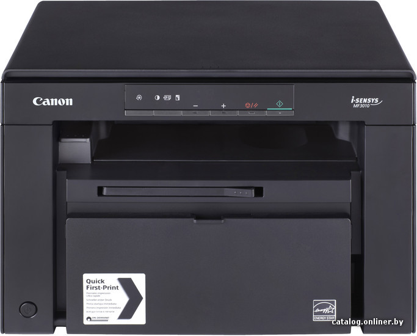

Canon i-SENSYS MF3010
Рейтинг
★★★★★
Фото товара
|  |
Масса и габариты
Ширина - 372мм
Высота - 254мм
Глубина - 276мм
Вес - 8.2кг
Описание
МФУ Canon i-SENSYS MF3010 полностью интегрируется в документооборот с помощью открытой платформы sXP от OKI и настраиваемого сенсорного экрана. Это очень быстрое и надежное многофункциональное устройство, сочетающее высокое качество печати и большую емкость лотков для бумаги, помогает достигать превосходных результатов работы в любой компании.
Цена
557 рублей